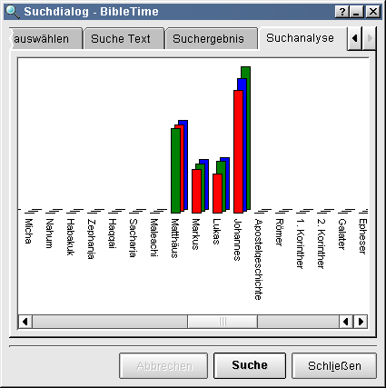

Teile der Einführung zum Suchen in Dokumenten wurde aus den Hilfedateien der MS Windows (R) Version von Sword entnommen.
Sie können in einem Dokument suchen indem Sie mit der rechten Maustaste auf den Dokumentennamen innerhalb der Hauptgruppe klicken und dann "Suche in Modul(en)" auswählen. Durch SHIFT- oder STRG-Klicken auf andere Modulenamen können Sie mehr als eines auswählen. Gehen Sie genauso vor um den Suchdialog zu öffnen. Sie suchen dann in jedem dieser Dokumente.
Suche Text - In diesem Teil geben Sie den Tzu suchenden Text ein und Sie setzen Sucheinstellungen. "Reguläre Ausdrücke" benutzen standardmäßigen RegExp Syntax um die Suche zu verfeindern.
Geben Sie ein oder mehrere Wörter, einen Teil eines Wortes (Trennen Sie Wörter oder Wortteile durch Leerzeichen), einen Satz oder ein Muster (Regulärer Ausdruck) nachdem gesucht werden soll. Wie der im Eingabebereich eingegebene Text interpretiert wird, hängt davon ab welcher Knopf (Mehrere Wörter, Satz oder Regulärer Ausdruck) ausgewählt wurde uch ob Unterscheidung für GROß/klein ausgewält wurde.
 | Hier funktioniert Drag, Sie können Verse und Lesezeichen in die Text-Eingabebox ziehen. Sie können Text in die Zwischenablage kopieren und in die Eingabezeile einfügen. |
Klicken Sie auf die Auswahlbox GROß/klein um die Unterscheidung zwischen GROß und klein an oder abzuschalten. Wenn die Box ausgewählt ist, werden nur die Verse gefunden, in denen der gefundene Text den Text der Eingabezeile enthält. Wenn die Box nicht ausgewählt wurde, wird die Suche etwas finden wenn der Text ohne Beachtung von Groß- oder Kleinschreibung stimmt. Um HERR aber nicht um Herr oder herr zu finden wählen Sie die Box aus. Um HERR, Herr und herr zu finden lassen Sie die Box unausgewählt.
Wenn der Mehrere Wörter Knopf ausgewählt ist wird die Suche alle Zeilen (oder Verse) finden, die alle Wörter (oder Teile), die in der Eingabezeile stehen, enthalten. Die Position und Reihenfolge der Wörter in der Zeile ist nicht von Bedeutung. Wenn alle (egal in welcher Reihenfolge) Wörter im Text vorkommen wird der Text in der Liste der gefundenen Einträge aufgelistet werden. Die Wörter dürfen sogar durch andere getrennt werden. Eine Suche nach Brunnen und Knecht; wird 1. Mose 21,25 finden, Und Abraham setzte Abimelech zur Rede um des Wasserbrunnens willen, den Abimelechs Knechte hatten mit Gewalt genommen. Dies ist deshalb so, da ein Wort, welches Teil eines anderen ist, als gefunden gilt wenn es in einem anderen Wort anthalten ist.
Wenn Genaue Suche ausgewählt wurde wird die Suche alle Zeilen (oder Verse) finden, die genau den in der Eingabezeile eingegebenen Text unter Einbezug der Leerzeichen enthalten. Der gesuchte Satz muss nicht an einer Wortgrenze starten. Eine Suche nach amt begehrt wird 1. Thimotheus 3:1 finden: Das ist gewißlich wahr: So jemand ein Bischofsamt begehrt, der begehrt ein köstlich Werk.
Eine Suche mit regulären Ausdrücke stellt eine Möglichkeit dar, einfache oder komplexe Suchen nach Zeichenketten durchzuführen, die einem Muster oder einer Menge von Mustern (Bereiche) entsprechen. Die einzelnen Muster einer Menge werden durch den horizontalen Strich | getrennt. Während es möglich ist, ein Muster zu bauen, dass nach einem Wort oder einem Satz sucht, sucht ein einfaches aus einem einzelnen Wort bestehendes Muster nicht nur nach diesem einen Wort, sondern auch nach jeder Zeichenkette die das gesuchte Wort enthält. Eine Suche nach gerecht wird Verse liefern, die das Wort gerecht enthalten. Es werden jedoch auch Verse zurückgeliefert, die Gerechtigkeit, Ungerechtigkeit oder gerechter enthalten. Eine Suche nach hall not ist nicht eine Suche nach hall UND not, sondern nach der Zeichenkette hall not mit einem Leerzeichen zwischen dem zweiten l und dem n. Die Suche nach hall not wird Textstellen mit shall not finden.
Die Mächtigkeit der regulären Ausdrücke liegt in den Mustern (oder Vorlagen) die benutzt werden, um die Suche zu definieren. Ein Muster besteht aus normalen Zeichen und einigen besonderen Zeichen, die von einer bestimmten Menge von Regeln interpretiert und benutzt werden. Die besonderen Zeichen enthalten .\[^*$?+. Normale (oder einfache) Zeichen, sind alle die, die keine besonderen Zeichen sind. Der Backslash, \, wird benutzt um die besonderen Zeichen in normale und normale in besondere Zeichen umzuwandeln.
Beispiel: Das Muster i. love\. wird Sätze finden, die mit his love oder in love oder is love finden, jeweils gefolgt von einem Punkt. Der erste Punkt in i. love\. ist ein Sonderzeichen, dass alle Zeichen an dieser Stelle erlaubt. Der Backslash in i. love\. bedeutet, dass der Punkt danach nicht als besonderes, sondern als normales Zeichen behandelt werden soll
. Der Punkt passt auf jedes Zeichen. Siehe auch Einzelheiten
* Der Stern findet 0 oder mehr Zeichen des vorhergehenden Sets, des vorhergehenden Zeichens oder des vorhergehenden besonderern Zeichens. Siehe auch Einzelheiten
+ Das Pluszeichen findet 1 oder mehr Zeichen des vorhergehenden Sets, des vorhergehenden Zeichens oder des vorhergehenden besonderern Zeichens. Siehe auch Einzelheiten
? Das Fragezeichen passt auf 0 oder 1 Zeichen des vorhergehenden Sets, Zeichens oder besonderern Zeichens. Siehe auch Einzelheiten
[ ] Eckige Klammern finden ein Zeichens innerhalb der eckigen Klammern [ ].Siehe auch Einzelheiten
^ Ein Hochzeichen als erstes Zeichen innerhalb von [ ] heißt NICHT. Siehe auch Einzelheiten
^ Ein Hochzeichen als Beginn eines Musters verankert an den Beginn der Zeile. Siehe auch Einzelheiten
$ Ein Dollarzeichen am Beginn eines Musters verankert an das Ende einer Zeile. Siehe auch Einzelheiten
| Ein vertikaler Strich hat die Bedeutung des logischen ODER. Siehe auch Einzelheiten
( ) Runde Klammern gruppieren Ausdrücke. Wird nicht unterstützt!
\ Ein Backslash kann vor jedem besonderem Zeichen benutzt werden, um dieses Zeichen zu finden Siehe auch Einzelheiten
\ Ein Backslash kann vor jedem normalen Zeichen benutzt werden um es zu einem besonderen Zeichen zu machen Siehe auch Einzelheiten
Der Punkt . steht für jedes einzelne Zeichen, sogar für ein Leerzeichen oder für ein Zeichen, dass nicht im Alphabet vorkommt. s.t findet sit, set, sot, usw., welche in folgenden Zeichenketten vorkommen können sitting, compasseth and sottish b..t findet boot, boat und beat foot.tool findet footstool und foot tool
Das Sternchen findet null oder mehr Zeichen des vorhergehenden Sets, Zeichens oder besonderen Zeichens. Die Benutzung einer Punkt Sternchen Kombination .* nach einem häufig gefundenem Muster kann die Suche sehr lange dauern lassen und das Programm eingefroren wirken lassen. be*n findet beeen, been, ben, und bn was z.B. Reuben und Shebna finden könnte.
Das Pluszeichen findet ein oder mehr Zeichen des vorhergehenden Sets, Zeichens oder besonderen Zeichens. Die Benutzung einer Pluszeichen Sternchen Kombination +* nach einem häufig gefundenem Muster kann die Suche sehr lange dauern lassen und das Programm eingefroren wirken lassen. be+n findet beeen, been und ben, jedoch nicht bn.
Das Fragezeichen findet 0 oder mehr Zeichen des vorhergehenden Sets, Zeichens oder besonderen Zeichens. be?n findet ben und bn jedoch nicht been. trees? findet trees oder tree.
Die eckigen Klammern schließen eine Menge von Zeichen ein, die Treffer erzielen können. Die Zeichen Punkt, Sternchen, Pluszeichen und Fragezeichen werden innerhalb der Klammern nicht als besondere Zeichen behandelt. Ein Minuszeichen kann benutzt werden, um einen Bereich anzugeben. Falls Sie möchten, dass ein Hochzeichen ^ Teil des Bereiches wird plazieren Sie es nicht direkt hinter die linke Klammer, oder es wird als besonderes Zeichen behandelt. Um den vertikalen Strich | in die Menge aufzunehmen, machen Sie ihn zum ersten Zeichen nach der linken eckigen Klammer (oder zweites nach dem besonderen Zeichen ^). Um ein Minuszeichen in die Menge aufzunehmen machen Sie es zum ersten Zeichen nach der linken Klammer (oder zweites nach dem besonderen Zeichen ^) oder auch zum letzten Zeichen der Menge. s[eia]t findet set, sit, und sat, jedoch nicht sot. s[eia]+t findet so wie oben undseat, seet, siet, usw. [a-d] findet a, b, c, oder d. [A-Z] findet jeden Großbuchstaben. [.;:?!] findet ., ;, :, ?, oder ! jedoch kein Komma. [ ]^-] findet ] oder ^ oder -
Wenn das Hochzeichen das erste Zeichen nach der linken Klammer ist, hat es die Bedeutung von NICHT. s[^io]t findet set, sat, usw., jedoch nicht sit und sot.
Wenn das Hochzeichen das erste Zeichen in einem Muster ist, verankert es diese an den Beginn der Zeile. Jeder Treffer muss am Beginn der Zeile liegen. Wegen ungefilterten Formatierungszeichen in einigen texten funktioniert diese Funktion nicht immer. Sie könnte es jedoch, wenn einige Punkte nach dem Hochzeichen gesetzt werden, um die Formatierungszeichen zu umgehen. ^Am Anfang findet Zeilen, die mit Amfang. beginnen (Vielleicht müssen Sie ^.....In the beginning benutzen).
Wenn das Dollarzeichen das letzte des Musters ist, verankert es das Muster an das Ende der Zeile. Jeder Treffer muss am Ende der Zeile stattfinden. Wegen ungefilterten Formatierungszeichen in einigen texten funktioniert diese Funktion nicht immer. Sie könnte es jedoch, wenn einige Punkte vor das Dollarzeichen gesetzt werden, um die Formatierungszeichen zu umgehen. Amen\.$ findet Zeilen, die mit Amen. enden (Vielleicht müsen Sie Amen\...., Amen\..........$, oder sogar Amen\....................$ benutzen)
Der senkrechte Strich zwischen verschiedenen Mustern hat die Bedeutung des logischen ODER. John|Peter findet John oder Peter. John .*Peter|Peter .*John findet John ... Peter oder Peter ... John. (.* verlangsamt die Suche) pain|suffering|sorrow findet pain, oder suffering, oder sorrow.
Die Benutzung der runden Klammern () wird nicht unterstützt.
Der Backslash vor einem besonderen Zeichen bedeutet, dass das Zeichen nicht in seiner besonderen Bedeutung behandelt werden soll, sondern dass es das Zeichen selbst sein soll. amen\. findet amen., jedoch nicht ament und es wird nicht firmament.
Der Backslash vor einem normalen Zeichen bedeutet, dass dieses statt der normalen Bedeutung eine besondere haben soll.
\b ausßerhalb von [ ] benutzt, bedeutet es Wortgrenze. Innerhalb von [ ] hat die es die Bedeutung des Backspace. \brighteous\b findet righteous, aber nicht unrighteous oder righteousness
\B steht für keine Wortgrenze. \Brighteous\B findet unrighteousness und unrighteously, jedoch nicht righteous, unrighteous oder righteousness.
\d steht für Zahlen; das Gleiche wie [0-9].
\D steht für nicht-Zahlen; das Gleiche wie [^0-9].
\s bedeutet Leerzeichen.
\S steht für nicht-Leerzeichen.
\w bedeutet alphanumerisch; das Gleiche wie [a-zA-Z0-9_].
\W bedeutet nicht-alphanumerisch; das Gleiche wie [^a-zA-Z0-9_].
Definieren Sie hier den Suchbereich
Kein Suchbereich Dies schaltet den Suchbereichsdialog ab. Das gesamte Dokument wird durchsucht.
Letztes Suchergebnis Die neue Suche wird nur in den während der letzten Suche gefundenen Versen suchen.
Benutze Suchbereiche Die neue Suche wird innerhalb des Bereichs durchgeführt, der in dem Verwaltungsdialog für Suchbereiche angegeben wurde.
Wenn Kein Suchbereich ausgewählt wurde und das KJV Modul durchsucht wird, wird der Name Jesus 939 mal gefunden werden. Wenn dann Letztes Suchergebnis ausgewählt wird und nach dem Titel Christ gesucht wird, bleiben257 von den 939 Treffern übrig. Wenn Letztes Suchergebnis ausgewählt bleibt und eine weitere Suche nach dem Titel Lord durchgeführt wird, bleiben 106 von den 257 Treffern übrig. Alle der verbleibenden 106 Treffern enthalten den Namen Jesus und die Titel Christ und Lord.
Verwalten Sie eigene Suchbereiche - Für jedes für die Suche ausgewählte Dokument können Sie obere und untere Grenzen eingeben und löschen. Klicken Sie dann auf Hinzufügen und eine Box für den Bereichsnamen wird geöffnet. Nach dem Eingeben des Namens, wird ihr Suchbereich zu den eigenen Bereichen hinzugefügt werden.
Der Bereich einer Suche kann entweder auf Gesamtes Modul oder auf Letztes Suchergebnis gesetzt werden. Wenn Gesamtes Modul ausgewählt wurde und eine Suche im KJV Modul nach dem Namen Jesus durchgeführt wird, werden 939 Treffer angezeigt. Wenn dasn Letztes Suchergebnis ausgewählt wurde und eine weitere Suche nach dem Titel Christ durchgeführt wird, verbleiben 257 der dersten 939 Treffer. Wenn Letztes Suchergebnis ausgewähl bleibt und eine weitere Suche nach dem Titel Lord durchgeführt wird, verbleibemn 106 Treffer, die alle den Namen Jesus und die beiden Titel Christ und Lord enthalten.
| Hier funktioniert Drag Sie können Versnummern und Lesezeichen in das Suchbereichs Feld ziehen. Sie könne auch Text in das Eintragsfeld einfügen. |
Suchergebnis - Dies zeigt ihnen - nach Modulen geordnet - wie viele Treffer des gesuchten Textes gefunden wurden. Klicken auf das Dokument wird die Liste der Referenzen öffnen. Das Klicken auf eine Referenz öffnet diese im Fenster darunter. Ziehen Sie die Referenz und lassen Sie diese auf einem Dokument in der Hauptgruppe fallen, um dieses Modul an der gewünschten Stelle zu öffnen.
| Hier funktioniert Drag |
| Select verse numbers and drag them to the main index to create bookmarks. |
| Wählen Sie einen Vers aus und ziehen Sie ihn auf ein ungeöffnetes Modul um diese zu öffnen und damit dieses die gewünschte Stelle anzeigt (Nur für Bibeln und Kommentare). |
| Wählen Sie einen Vers aus und ziehen Sie diesen auf ein geöffnetes Dokument, um das Anzeigefenster an diese Stelle springen zu lassen. |
Suchanalyse - Dies zeigt eine grafische Analyse der Anzahl der Treffer in jedem Buch. Sie kann das Ergebnis aller Dokumente anzeigen. Sie können den Graphen auch als Bild auf Festplatte abspeichern.
